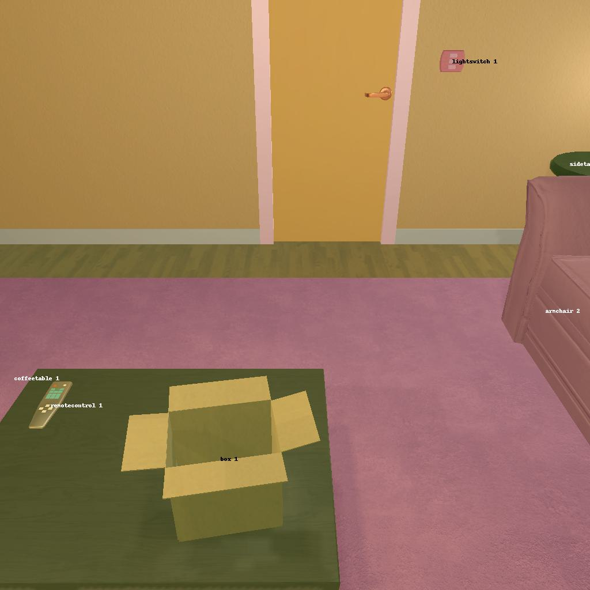

---------------------------------------------------------task: 7---------------------------------------------------------
--------------------------------------------------------------------------------------------------------------------------------------------------------------------
--------------------------------------------------------------------------------------------------------------------------------------------------------------------
Step:--------------------------------------------------------------------------17-------------------------------------------------------------------------------
----------------------------------------
VLM Prompt:
Image1:
Image2:
Image3:
**Instruction**
1. Analyze the provided image to identify all visible household objects, focusing on those relevant to the task description "put a creditcard in coffeetable."
2. Use the analysis of the image and the task hint "The agent must find an object of the desired type, pick it up, find the correct location to place it, and put it down there." to answer the question: what is the most reasonable action in the choices for the task description "put a creditcard in coffeetable"?
4. Decide and write the answer using the template: The answer is: (i): , where i is the real number. If there is no desired object in the image, search every place based on **Initial Observation** to find the object. And if no one is exactly correct, choose a similar answer.
**Initial Observation**
You are in the middle of a room. Looking quickly around you, you can see armchair (1-2), dresser (1), garbagecan (1), cabinet (1-4), drawer (1-4), coffeetable (1), sidetable (1), sofa (1)
**Answer Choices**
(1): go to armchair 1
(2): go to armchair 2
(3): go to dresser 1
(4): go to garbagecan 1
(5): go to cabinet 1
(6): go to drawer 1
(7): go to drawer 2
(8): go to cabinet 2
(9): go to drawer 3
(10): go to cabinet 3
(11): go to drawer 4
(12): go to cabinet 4
(13): go to sidetable 1
(14): go to sofa 1
(15): take box 1 from coffeetable 1
(16): take remotecontrol 1 from coffeetable 1
(17): take lightswitch 1 from coffeetable 1
(18): examine coffeetable 1
**Answer**
Let's think step by step by following the instructions.
----------------------------------------
----------------------------------------
Original Response:
The task is to put a credit card in the coffeetable. First, we need to find a credit card. The image shows a coffeetable with a box and a remote control on it, but no credit card is visible. Therefore, we must search other places where a credit card might be found. It is not likely to be in places like the garbage can or with the remote control. A credit card is typically a personal item that might be placed in a drawer, a cabinet, or on a sidetable or dresser, where personal items are often kept.
Based on the initial observation and the most likely location to find a credit card, the most reasonable actions from the choices would be to search the drawers and cabinets, as well as the sidetable and dresser. Since the coffeetable is already visible in the image and does not contain a credit card, there is no need to examine it further (eliminating answer 18). The light switch is also irrelevant to the task (eliminating answer 17). Taking the box or remote control from the coffeetable is not related to finding a credit card (eliminating answers 15 and 16).
Considering the above analysis, the most reasonable actions would be to check the drawers, cabinets, sidetable, and dresser. Since we can only select one action and drawers are common places to store such items, checking a drawer would be a good start.
The answer is: (6): go to drawer 1.
----------------------------------------
----------------------------------------
>>> Refine Original VLM Response and Get Pure Action: go to drawer 1
----------------------------------------
-----------------------------------------------------------------
Running time: 12.784980058670044 seconds
Total Money: 4.249749999999999
-----------------------------------------------------------------
-----------------------------------------------------------------
Text Observation:You arrive at loc 5. The drawer 1 is closed.
-----------------------------------------------------------------
UNSUCCEED